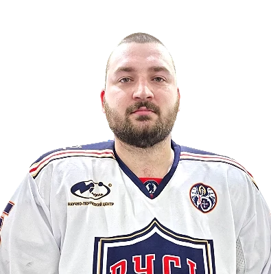

ТРЕНЕР ЗАЩИТНИКОВ20 ИЮНЯ 1998
Николай АнтоновичПавлов
Отвечает за подготовку защитников. Опыт Северной Америки и Молодёжной хоккейной лиги.
Воспитанник московского хоккея, профессиональный защитник, задрафтованный клубом КХЛ «Амур». Чемпион России по юниорам. Привлекался в юниорские сборные России U16 и U17 под руководством Виталия Владимировича Прохорова и Игоря Владимировича Гришина.
За плечами Николая — более ста матчей в МХЛ за «Амурских Тигров» и «Русских Витязей» и опыт игры за Springfield Jr. Blues в североамериканской лиге NAHL. В работе с игроками передаёт стандарты сборной, умение читать лёд на два шага вперёд и психологию победителей.
24матча в NAHL
2сезона в Springfield